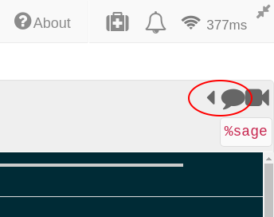
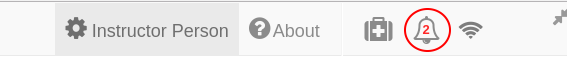
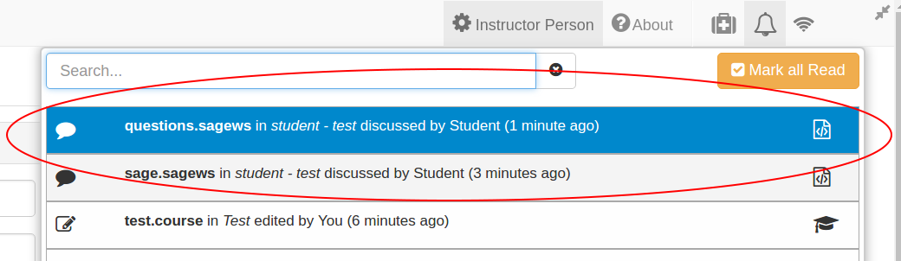
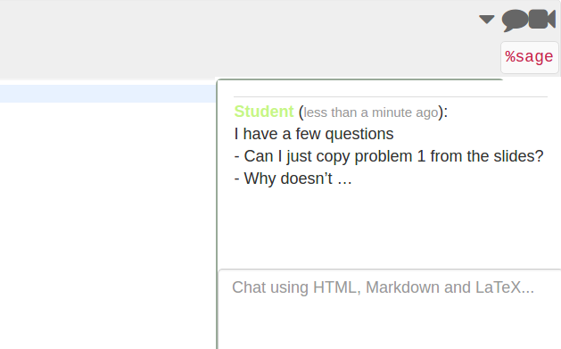

Collaboration¶
There are multiple ways in which you can interact with your students or collaborators, in this section we will present some features that you might find useful when managing a course.
Table of Contents
Real-time chatrooms¶
You can create general real-time chatrooms for your CoCalc projects. You can create a project chat room by clicking on the New button, this will create a file with .sage-chat extension.
In addition, every file in CoCalc has a separate chat that can be found on the upper left corner of your screen.
Every time one of your students writes something into a chat on any one of their files, you will get a notification displayed on the top bar.
Clicking on the notification button (bell icon on the top of the screen) displays a notification menu with the latest chats and modifications in the project or specific files.
The chat notifications are always presented at the top of the menu, followed by any updates you or your collaborators have done to the project. Clicking on a chat notification will take you to the student’s copy of the file inside his/her project. From there, you can both reply to their questions and look at their work simultaneously.
Once you have replied to the student’s question (s)he will receive a notification.
Live collaborative editing¶
Multiple users can collaborate on a project. As soon as a collaborator is added to a a project (see [Creating a Course](./creating_a_course/creating_course.md)) they share both the project and the associated files.
Live collaborative editing is possible in CoCalc. If one of your collaborators updates a notebook, the rest can see the changes as they are being made (similar to Google Docs).
Group Projects¶
There are various ways in which you can facilitate students’ group projects in CoCalc. A couple of options are:
One project per team¶
Have someone in each group make a project with all the group members as collaborators. They will all then be able to collaborate on the same project and modify files simultaneously.
You should note, however, that by using this approach you cannot automatically collect assignments from the team. A workaround could be creating an assignment in your main project and having the students copy that file to their group project.
Using Git¶
Students can collaborate from within their individual course projects using Git via the terminal in CoCalc. See Using Git in Tips and tricks.

{kind=link}
{kind=link}
{kind=link}
{kind=link}
{kind=link}
{kind=link}
{kind=link}